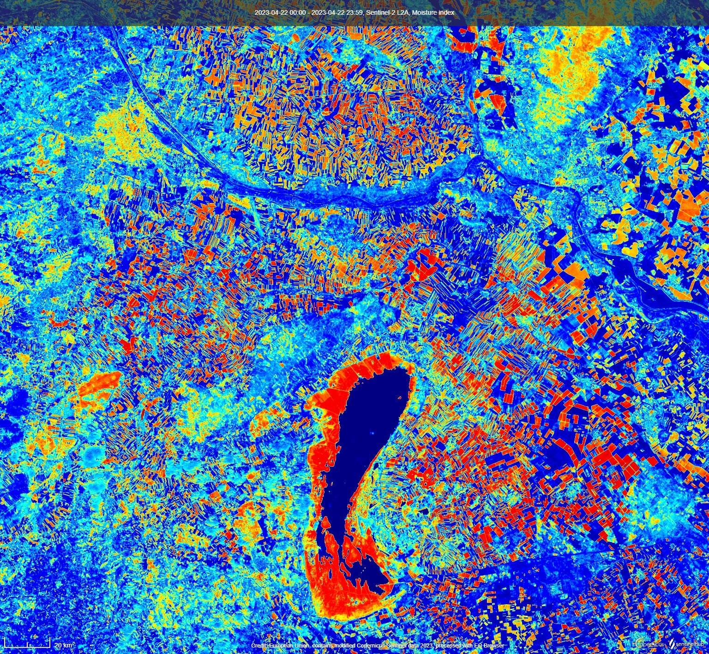
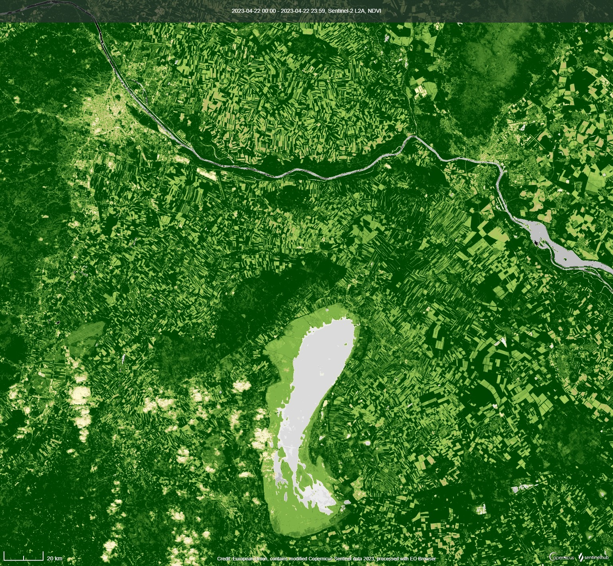
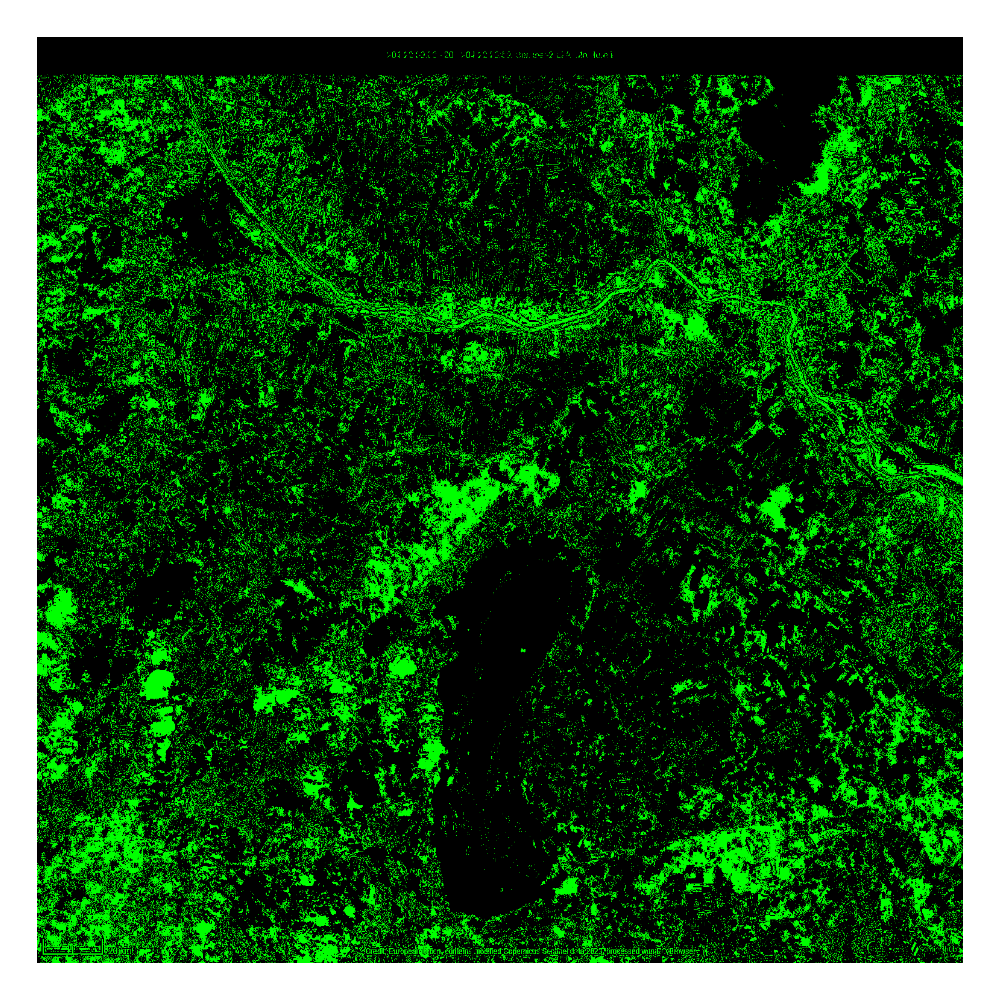

Sentinel-hub is a project, which aims to collect petabytes of satellite data and provide with filtered images. Their built-in filters use several bands in both visible and invisible electromagnetic frequencies to extract various information like vegetation, ice coverage, surface temperature and so on. The aim of this paper is to attempt using couple of such preprocessed images and creating a new one with more abstract zones like “dry green space”, “moisty deforestated area” which use a combination of attributes.
Workflow
From the website Sentinel-Hub I’ve clipped an area containing Vienna, Bratislava and Neusiedler Lake. Then I downloaded Moisture index map and Vegetation index map.

Moisture Index: Red = low; Blue = high

Vegetation Index: Dark Green = healthy; Light green = poor vegetation, rocks; White = water
I have encountered a problem I did not find solution to:
Warning in install.packages : downloaded length 15088709 != reported length 19368748 Warning in install.packages : URL ‘https://cran.rstudio.com/bin/windows/contrib/4.2/magick_2.7.4.zip’: Timeout of 60 seconds was reached Error in download.file(url, destfile, method, mode = “wb”, …) : download from ‘https://cran.rstudio.com/bin/windows/contrib/4.2/magick_2.7.4.zip’ failed Magick is considered the best library for creation an overlap of pictures.
I have tried 6 different methods to modify images, but all had unexpected undocumented behaviour. Because of unintuitive backwards indexation of multidimensional matrices I have decided to stick to imperative approach and use cycles. The color of the pixel is decided by a simple criteria: \(img1.red>0.8\) and (\(img2.red<0.01\) or \(img2.green>0.5\)). That corresponds to high moisture and high vegetation.
This way we overlapped attributes of the territories and found the best places to spend a weekend. Unfortunately, some green zones to the West from the lake were created by clouds, because they are visible in the NDVI filter. Other than that the best place are the mountains on the border between South Austria and Burgenland (If it is not a national closed park) and the nothern slope of Konigswarte. 
Conclusion
It feels almost impossible to use declarative paradigm in R. Every library has its own syntax, which is not even thoroughly explained by the creators. Overall searching bits by bits for complete documentation of the new functions takes several times more time than the library promises to save.